LLaVA(1)-Visual Instruction Tuning
论文 Paper: https://arxiv.org/abs/2304.08485
代码 GitHub: https://github.com/haotian-liu/LLaVA
参考：
https://zhuanlan.zhihu.com/p/622907299
https://hackmd.io/@YungHuiHsu/HyMgBbjSa#Multimodal-LLaVA鍊成術-視覺指令調節-Visual-Instruction-Tuning
LLaVA-Visual Instruction Tuning
摘要
使用机器生成的Instruction followling数据对大规模语言模型（LLM）进行指令调优，已经证明可以提高它们在新任务上的zero-shot能力，但这一思想在多模态领域的探索较少。
本文首次尝试使用仅支持语言的GPT-4生成多模态语言-图像Instruction followling数据。通过对这些生成的数据进行指令调优，我们提出了LLaVA：大型语言和视觉助手，这是一个端到端训练的大型多模态模型，结合了视觉编码器和LLM，旨在进行通用的视觉和语言理解。
- 为了促进未来在视觉指令跟随方面的研究，我们构建了两个评估基准，涵盖多样化且具有挑战性的应用任务。
- 实验结果表明，LLaVA展示了令人印象深刻的多模态对话能力，有时在未见过的图像/指令上展现出类似于多模态GPT-4的行为，并且在一个合成的多模态指令跟随数据集上，相较于GPT-4取得了85.1%的相对得分。在Science QA数据集上，LLaVA和GPT-4的协同作用达到了92.53%的新状态-of-the-art准确率。
- 我们公开了GPT-4生成的视觉指令调优数据、我们的模型和代码。
1. 引言
人类通过多种渠道与世界互动，例如视觉和语言，每种渠道在表示和传达特定概念方面都有其独特的优势，从而有助于更好地理解世界。人工智能的核心目标之一是开发一个通用助手，能够有效地遵循多模态的视觉和语言指令，符合人类意图，在各种现实场景任务中发挥作用。
为此，研究界对开发具有语言增强功能的基础视觉模型表现出越来越大的兴趣，这些模型在开放世界视觉理解（如分类、检测、分割和描述生成）方面表现出强大能力，并能进行视觉生成和编辑。在这类工作中，每项任务通常由一个独立的大型视觉模型解决，任务指令被隐式考虑在模型设计中。此外，语言的作用通常仅限于描述图像内容，这虽然允许语言在将视觉信号映射到语言语义中发挥重要作用，但却导致模型的界面通常是固定的，缺乏用户指令的互动性和适应性。
另一方面，大型语言模型（LLM）展示了语言可以发挥更广泛的作用：作为通用助手的统一界面，其中各种任务指令可以用语言显式表示，并指导端到端训练的神经助手切换到感兴趣的任务进行解决。例如，最近ChatGPT和GPT-4的成功表明，经过对齐的大型语言模型在遵循人类指令方面的强大能力，并激发了开发开源LLM的极大兴趣。其中，LLaMA[49]是一个开源的LLM，与GPT-3的性能相匹配。Alpaca、Vicuna、GPT-4-LLM、利用各种机器生成的高质量Instruction followling样本来提高LLM的对齐能力，与专有LLM相比，产生了令人印象深刻的性能。重要的是，这一类的工作仅限于文本。
在本文中，我们提出了视觉指令调优，这是首次尝试将指令调优扩展到语言-图像多模态领域，为构建通用视觉助手铺平道路。我们的主要贡献包括：
- 多模态Instruction followling数据：我们提出了一种数据转换方法和pipline，利用ChatGPT/GPT-4将图像-文本对转化为适合的Instruction followling格式，以解决视觉-语言指令跟随数据的缺乏问题。
- 大型多模态模型：通过将CLIP视觉编码器与语言解码器Vicuna连接起来，并在生成的视觉语言指令数据上进行端到端微调，我们开发了一个大规模多模态模型。实验结果验证了生成数据用于模型指令调优的有效性，并提供了构建通用指令跟随视觉代理的实用建议。
- 多模态指令跟随基准：我们推出了LLaVA-Bench，包括两个具有挑战性的基准，涵盖多样化的配对图像、指令和详细注释。
- 开源：我们公开发布了生成的多模态指令数据、代码库、模型检查点以及一个视觉聊天demo。
2. 相关工作
多模态指令跟随代理。在计算机视觉领域，现有的构建指令跟随代理的工作大致可以分为两类：
- 端到端训练的模型，这些模型分别针对每个具体的研究课题进行探索。例如，视觉-语言导航任务和Habitat要求具身AI代理遵循自然语言指令，并采取一系列动作以在视觉环境中完成目标。在图像编辑领域，给定一张输入图像和一条告诉代理该做什么的书面指令，InstructPix2Pix根据人类指令编辑图像。
- 通过LangChain / LLMs协调不同模型的系统，如Visual ChatGPT、X-GPT 、MM-REACT、VisProg和ViperGPT。这些工作与我们在构建指令跟随代理方面有相同的目标，但我们更关注开发一个端到端训练的语言-视觉多模态模型，以处理多任务。
指令调优。在自然语言处理（NLP）领域，为了使大型语言模型（LLM）如GPT-3 、T5、PaLM 和OPT能够遵循自然语言指令并完成现实世界的任务，研究人员已经探索了LLM指令调优的方法，从而产生了如InstructGPT / ChatGPT 、FLAN-T5、FLAN-PaLM和OPT-IML等指令调优的对应模型。事实证明，这种简单的方法可以有效地提高LLM的zero-shot和few-shot泛化能力。因此，将这一思想从NLP借用到计算机视觉领域是自然而然的。更广泛地说，基础模型中的teacher-student蒸馏思想也已经在其他领域进行研究，如图像分类。
LLM指令调优可以有效地提高LLM的zero-shot和few-shot泛化能力,而且从NLP中借鉴思想到CV领域是自然而然的
Flamingo可以视为多模态领域中的GPT-3时刻，因为它在zero-shot任务迁移和上下文学习方面表现强劲。其他基于图像-文本对训练的大型多模态模型包括BLIP-2、FROMAGe和KOSMOS-1。PaLM-E是一个面向具身AI的多模态语言模型。基于最近“最佳”开源大预言模型 LLaMA，OpenFlamingo和LLaMA-Adapter是开源项目，使LLaMA能够使用图像输入，为构建开源多模态LLM铺平了道路。尽管这些模型在任务转移泛化表现上有前景，但它们并没有专门使用视觉-语言指令数据进行调优，因此它们在多模态任务中的表现通常不如text-only任务。本研究旨在填补这一空白，并研究其有效性。
之前的一些多模态开源项目因为没有专门使用视觉-语言指令数据进行调优，因此它们在多模态任务中的表现通常不如text-only任务
最后，值得注意的是，visual instruction tuning与visual prompt tuning是不同的：前者旨在提高模型的Instruction followling能力，而后者则旨在提高模型适应的参数效率。
3. GPT辅助的视觉指令数据生成
研究社区已经见证了大量公共多模态数据（例如图像-文本对）的激增，从CC到LAION不等。
然而，在多模态指令跟随数据方面，可用数据量较为有限，部分原因在于依赖人力数据收集的过程既耗时又缺乏明确的定义。受到近期GPT模型在文本标注任务中成功应用的启发，我们提出利用ChatGPT/GPT-4从广泛存在的图像对数据中收集多模态指令跟随数据。
对于一个图像 及其关联的标题，创建一组意在指导助手描述图像内容的问题 是很自然的。我们使用GPT-4生成此类问题列表（详细信息见附录）。因此，将图像-文本对扩展为其指令跟随版本的一种简单方法是：。
尽管这种扩展方式便宜易行，但其在指令和响应中缺乏多样性和深度推理。
为了缓解这一问题，我们利用仅支持语言的GPT-4或ChatGPT作为强大的techer（它们仅接受文本输入），以创建涉及视觉内容的Instruction followling数据。具体而言，为了将图像编码为可用于文本GPT的视觉特征，我们使用了两种符号表示方式：
- 标题通常从多个角度描述视觉场景；
- 边界框通常用于定位场景中的对象，每个框都编码了对象的概念及其空间位置。表14的顶部展示了一个示例。
这种符号表示方式允许我们将图像编码为LLM可识别的序列。我们使用COCO图像并生成三种类型的指令跟随数据。每种类型的示例见表1底部。对于每种类型，我们首先手动设计了一些示例。这些是数据收集中唯一的人类标注，并作为种子示例用于上下文学习以query GPT-4。
- 对话：我们设计了一段助手与询问此照片问题的人的对话。回答的语气仿佛助手正在观察图像并回答问题。提问内容多样，包括对象类型、数量、动作、位置及相对位置等问题，仅考虑答案明确的问题。详细提示见附录。
- 详细描述：为了为图像提供丰富而全面的描述，我们创建了一组具有此意图的问题列表。然后提示GPT-4生成详细描述。
- 复杂推理：在前两种类型专注于视觉内容本身的基础上，我们进一步创建了需要深入推理的问题。这些答案通常需要通过遵循严格逻辑的逐步推理过程得出。
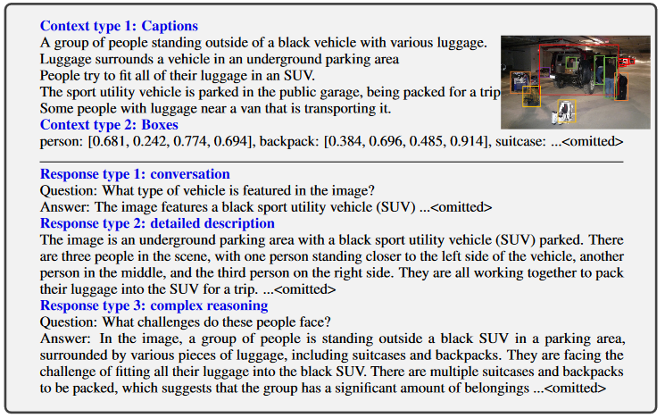
我们总共收集了158,000个独特的语言-图像Instruction followling样本，其中包括58,000个对话、23,000个详细描述和77,000个复杂推理数据。在早期实验中，我们对比了ChatGPT和GPT-4的使用，发现GPT-4始终生成更高质量的Instruction followling数据，例如在空间推理方面表现优异。
利用ChatGPT/GPT-4从广泛存在的图像对数据中收集多模态指令跟随数据。
4. 视觉指令微调
4.1 架构
主要目标是有效利用预训练的大语言模型（LLM）和视觉模型的能力。网络架构如图1所示。我们选择了Vicuna作为LLM ，参数化为，因为它在语言任务中的Instruction followling能力优于公开可用的模型检查点
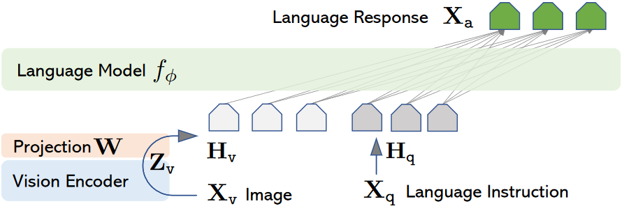
视觉编码器
对于输入图像，我们采用预训练的CLIP视觉编码器ViT-L/14，它提供了视觉特征。在实验中，我们分别考虑了最后一个Transformer层前后的网格特征。我们使用一个简单的线性层将图像特征连接到词嵌入空间。具体来说，我们应用一个可训练的投影矩阵 W将 转换为语言嵌入token，其维度与语言模型中的词嵌入空间相同：
这样，我们得到了视觉标记序列。需要注意的是，我们的简单投影方案是轻量化的，这使我们能够快速迭代以数据为中心的实验。其他更复杂的图像和语言表示连接方案也可以考虑，例如Flamingo中的门控交叉注意力和BLIP-2中的Q-former或提供物体级别的其他视觉编码器，例如SAM。探索更有效、更复杂的LLaVA架构设计是我们未来工作的方向。
1 | # 代码会从 config 中读取以下字段： |
说白了就是把图像经过vision encoder(CLIP预训练之后的ViT)输出的图像特征经过单层linear或者双层MLP的projection得到可以被LLM接受的语言token序列，然后将与图像对应的语言指令编码后的得到的token一起输入LLM得到最后的response。
4.2 训练
对于每张图像，我们生成多轮对话数据 ，其中 T为总轮数。我们将这些数据组织为一个序列，将所有的回答视为助手的响应，指令在第 t 轮时的形式为：
这样就得到了多模态指令跟随序列的统一格式。
如表2所示。我们对LLM进行指令调优，使用其原始的自回归训练目标来预测目标回答。
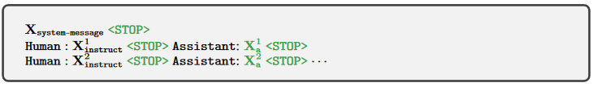
表二展示的是两轮对话：
- 表示人类和助手的对话
- 是[输入图像, 第一轮次的提问]或者[第一轮次的提问, 输入图像]
- 是assistant第一轮次的回答
- 是[第一轮次的提问]
- 是assistant第二轮次的回答
表示序列的结束符号，例如"###" - 由于模型被训练为预测assistant的答案以及在哪里停止，因此仅使用绿色序列/标记来计算自回归模型中的损失。
这种设计用于训练模型如何根据給定的問題和相应的图像进行交互。在第一回合，通过随机改变问题和图像的順序，模型能学习到不同的讯息呈现方式；而在后续的回合，模型則聚焦于如何基于新的問题继续对话。这样的训练方法旨在提高模型处理视觉讯息和语言指令的能力。
具体来说，对于一个长度为L的序列，我们通过以下公式计算目标回答的概率：
其中， 为可训练的参数， 和 分别是当前预测token 之前的指令和回答token。请参见表2了解预测token的具体示例。对于公式中的条件项，我们显式地添加 来强调图像对所有答案的基础作用，并省略及所有先前的
公式解释了在给定图像和指令的情況下，模型预测目标回答的机率：
- $p(X_a|X_v,X_{instruct}) X_vX_{instruct}X_a$的概率。
- 表示对于所有的L个预测字词，将每个字词的条件概率相乘，L是序列的长度。
- 是模型在参数θ下，根据已知的图像、之前的指令和之前的回答，产生下一个字词的几率。
- $X_{instruct},<i $和 $X_a,<i $分別代表在生成第i个字词之前的所有指令和回答字词。
对于LLaVA模型的训练，我们采用了两阶段的指令调优过程。
阶段1：特征对齐的预训练
-
为了在概念覆盖和训练效率之间取得平衡，首先对CC3M数据集进行了筛选，保留了595K图像-文本对。详细的筛选过程请参见附录(图7)。
-
将图像-文本对使用第3节中描述的简单扩展方法（感觉这里就是用的不同方法扩展）转化为指令跟随数据。每个样本可以视为单轮对话。(这意味着每个样本对应的)
-
为了构建公式（2）中的输入 ，对于每张图像 ，随机采样一个问题 ，(随机采样的问题如下图所示，也可见附录E表11)，即要求助手简要描述该图像的语言指令。真实的预测答案 是原始标题。
-
在训练过程中，我们保持视觉编码器和LLM的权重不变，仅对投影矩阵W进行训练，以最大化公式（3）的似然。
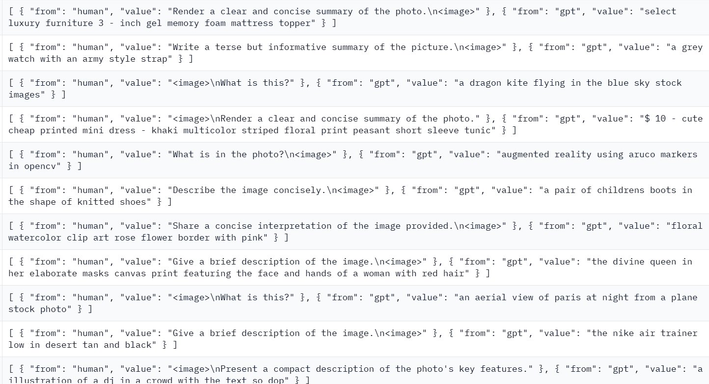
通过这种方式，图像特征 可以与预训练的LLM词嵌入进行对齐。这个阶段可以理解为为冻结的LLM训练一个兼容的视觉标记器。
预训练阶段冻结LLM和视觉编码器，目的是训练一个很好的将图像特征序列转换为语言标记token的projection。
- 预训练阶段每个样本的对话只有一轮，且
- 如上图所示，“human”,"value"对应的是随机采样的问题,“gpt”,"value"对应的是gpt生成的真实预测答案。
- 所以预训练时输入的就是,输出的LLM response是预测的caption。
阶段2：端到端微调(Visual Instruction Tuning)
我们始终保持视觉编码器的权重冻结，并继续更新投影层和LLM的预训练权重；即在公式（3）中，训练的参数为 。我们考虑了两种特定的应用场景：
- 多模态聊天机器人。我们通过在第3节中介绍的158K语言-图像指令跟随数据上进行微调，开发了一个聊天机器人。在三种类型的回答中，conversaion是多轮的，而详细描述和复杂推理是单轮的。在训练中，所有类型的数据都被均匀采样。
- 科学问答。我们在ScienceQA基准数据集上研究我们的方法。这是第一个大规模的多模态科学问答数据集，注释了详细的讲解和解释。每个问题提供了一个自然语言或图像的上下文，助手在自然语言中提供推理过程，并从多个选项中选择答案。在训练过程中，我们将数据组织为单轮对话，问题和上下文作为，推理和答案作为。
Coco,GQA,OCR-VQA,TextVQA,VisualGenome构成了最终的指令微调数据集。注意这是llava-v1.0，所以只有158k，在llava-v1.5中是665k
5. 实验
我们通过两种主要的实验设置评估LLaVA在指令跟随和视觉推理能力方面的表现：
- 多模态聊天机器人
- ScienceQA数据集
我们使用8个A100 GPU训练所有模型，并遵循Vicuna的超参数。在CC-595K过滤后的子集上对模型进行1个epoch的预训练，学习率为2e-3，批量大小为128；随后在提出的LLaVA-Instruct-158K数据集上进行3个epoch的微调，学习率为2e-5，批量大小为32。更多训练细节见附录。
5.1 多模态聊天机器人
我们开发了一个聊天机器人演示，展示LLaVA的图像理解和对话能力，并研究LLaVA在消化视觉输入和表现指令跟随能力方面的表现。
首先，我们使用了原始GPT-4论文中的例子（如表3，更多例子见附录），这些例子需要深入的图像理解。为了进行比较，我们引用了多模态GPT-4论文中的提示和响应，同时查询BLIP-2和OpenFlamingo模型检查点以获取它们的响应。
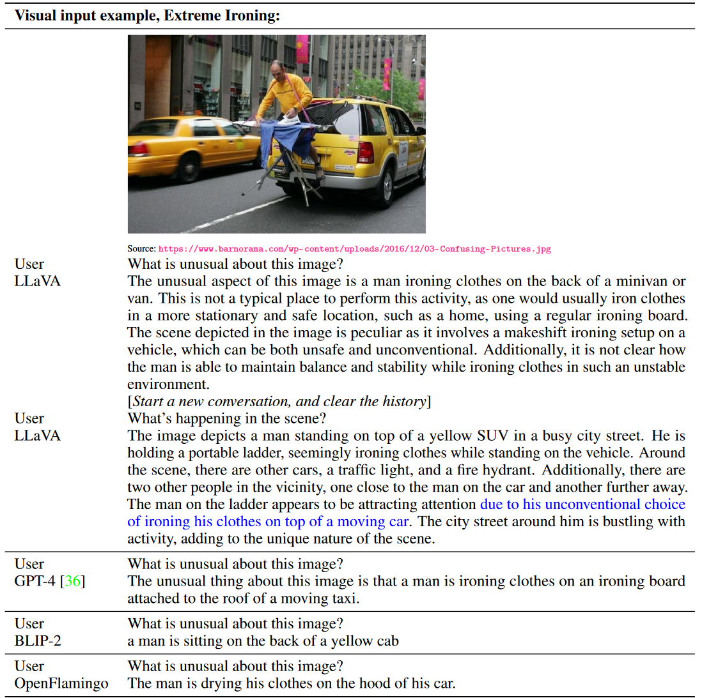
令人惊讶的是，尽管LLaVA是在一个小规模的多模态指令跟随数据集（大约80K张独特图片）上进行训练的，但它在这些示例上展现出了与多模态GPT-4相似的推理结果。需要注意的是，虽然这些图像对于LLaVA来说是不在训练数据集内的，但LLaVA仍然能够理解场景并遵循问题指令，给出合理的回答。相比之下，BLIP-2和OpenFlamingo则更多聚焦于描述图像，而不是根据用户的指令给出合适的回答。
定量评估
为了系统地理解LLaVA的表现，我们提出了一个定量指标来衡量模型在多模态数据上的指令跟随能力。我们借鉴了Vicuna的方法，利用GPT-4来评估生成的响应质量。具体来说:
- 我们创建了由图像、真实文本描述和问题组成的三元组。候选模型（如LLaVA）基于问题和图像预测答案。
- 为了提供一个近似的理论上限，我们使用基于问题和真实文本描述的参考预测，通过纯文本GPT-4生成。
- 在获得两种模型的响应后，我们将问题、视觉信息（以文本描述的形式）和两位助手生成的回答输入到评判者（即纯文本GPT-4）中。评判者评估回答的有用性、相关性、准确性和详细程度，并给出一个1到10的评分，分数越高表示总体表现越好。同时，评判者还被要求提供评估的详细解释，以帮助我们更好地理解评分的依据。
我们报告了相对于使用真实图像描述作为视觉输入的纯文本GPT-4模型的相对分数，并创建了两个基准来评估模型性能。
- LLaVA-Bench（COCO）
我们从COCO-Val-2014中随机选择了30张图像，并为每张图像生成了三种类型的问题（对话、详细描述和复杂推理），总共90个问题。这一基准研究了模型在一致的视觉输入下的对齐行为和能力。我们通过改变训练数据集研究了不同类型指令跟随数据的效果，结果见表4。
首先，经过指令调优，模型的用户指令跟随能力显著提高，分数提升超过50点。其次，添加少量的详细描述和复杂推理问题使模型的总体能力提高了7点。此外，这还提升了模型在对话类问题上的表现，表明推理能力的提高对对话能力有补充作用。最后，三种数据类型结合使用时，模型在性能上达到了最佳（85.1%）。 - LLaVA-Bench（开放领域）
为了评估模型在更具挑战性任务中的表现及其在新领域中的泛化能力，我们收集了一个包含24张图片的多样化数据集，共有60个问题，包括室内和室外场景、表情包、绘画、素描等，并为每张图片关联了高度详细的人工注释和合适的问题选择。我们在表5中对比了LLaVA、BLIP-2和OpenFlamingo的表现。
得益于视觉指令调优，LLaVA在性能上显著优于BLIP-2（+29%）和OpenFlamingo（+48%）。相较于使用真实标签的纯文本GPT-4，LLaVA在复杂推理问题上达到了令人印象深刻的81.7%性能，总体得分为67.3%。
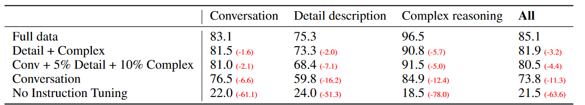
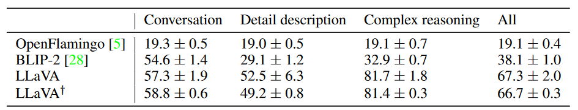
局限性
这一开放领域的LLaVA-Bench基准被设计为具有挑战性，旨在揭示模型的弱点。例如，表6中展示了两个案例及其关联的问题。
- 对于拉面示例，要正确回答餐厅的名称，模型需要具备广泛的知识覆盖和多语言理解能力；而要正确描述配菜，则可能需要从互联网检索相关的多模态信息。
- 对于冰箱示例，要识别正确的酸奶品牌，模型需要处理高分辨率图像并具备丰富的知识覆盖。
我们还观察到一个有趣的失败案例：当被问及冰箱中是否有草莓味酸奶时，LLaVA回答“是”，尽管冰箱中只有酸奶和草莓。这表明LLaVA有时会将图像视为“patches的集合”，未能理解图像中的复杂语义。我们希望LLaVA能作为这些基准的一个稳固基线，其研究结果能激励未来工作开发更强大的多模态模型。
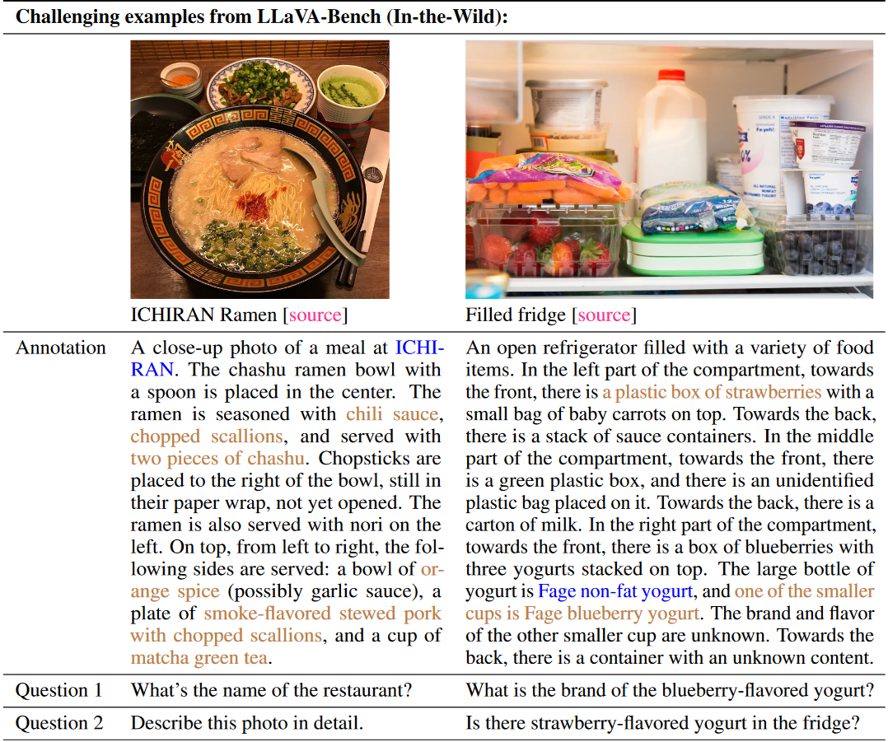
5.2 ScienceQA
ScienceQA包含21,000个多模态多项选择题，涵盖3个学科、26个主题、127个类别和379项技能。该基准数据集分为训练集、验证集和测试集，分别包含12,726个、4,241个和4,241个样本。
我们考虑了两种代表性方法，包括使用和不使用链式思维（CoT）的GPT-3.5模型（text-davinci-002）、LLaMA-Adapter以及多模态链式思维（MM-CoT），后者是当前在该数据集上的最先进方法。更多基准数据请参见https://arxiv.org/abs/2209.09513。
结果见表7。对于LLaVA，我们使用CLIP视觉编码器最后一层之前的视觉特征，让模型首先预测推理过程，然后是答案，并训练12个epoch。LLaVA的准确率为90.92%，非常接近最先进的91.68%。为了探索LLM的极限，我们还使用2-shot上下文学习提示GPT-4，获得了82.69%的准确率，相较于GPT-3.5的75.17%提高了7.52%。对于大量问题，我们发现GPT-4由于上下文不足（如缺少图像或图表）而无法回答。我们考虑了两种将LLaVA和GPT-4的输出结合的方案：
- GPT-4补充方案：每当GPT-4无法提供答案时，我们使用LLaVA的预测结果。这种方案的准确率为90.97%，几乎与单独使用LLaVA相同；
- GPT-4作为裁判方案：每当GPT-4和LLaVA产生不同的答案时，我们再次提示GPT-4，要求其根据问题和两个结果提供最终答案。这种方法的思想类似于CoT，但融合了来自另一个模型的外部知识。令人惊讶的是，这种方案在所有问题类别上都能提供一致的提升，并实现了92.53%的新最先进准确率。有趣的是，无法处理图像的text-only GPT-4通过这一方案提高了模型在带有图像上下文问题上的整体表现。这是因为这些问题有些实际上不依赖于图像上下文即可得到正确答案。GPT-4裁判能够识别此类情况并纠正LLaVA的错误。具体示例如附录中所示。据我们所知,这是 GPT-4 首次用于模型集成。我们希望这一发现能够鼓励未来的研究探索更有效的方法来利用LLM进行模型集成。
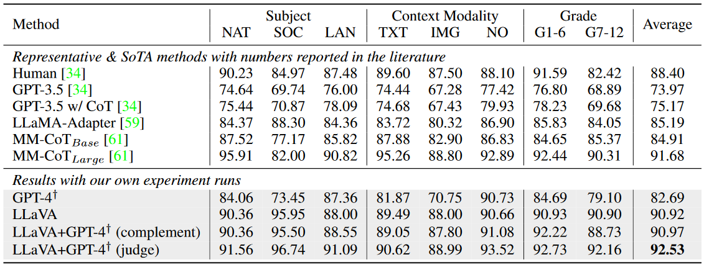
消融实验
我们对ScienceQA进行了若干设计选择的消融实验，结果见表8。
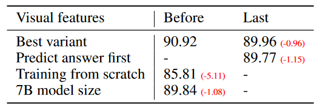
- 视觉特征：我们尝试使用CLIP视觉编码器的最后一层特征，得到了89.96%的准确率，比使用最后一层之前的特征（90.92%）低0.96%。我们假设这是因为CLIP的最后一层特征可能更侧重于全局和抽象的图像属性，而之前的层则可能更侧重于局部特征，这些对于理解特定图像细节更有用。
- 链式思维：为了决定模型预测中推理过程和答案的顺序，我们运行了两种变体，观察到答案先行(先给出这么预测理由再给出预测结果）的策略在12个epoch时报告了89.77%的最佳准确率，而推理先行策略在6个epoch时迅速达到89.77%的准确率，但更多的训练没有带来额外的提升。我们得出结论，类似于CoT的推理先行策略可以大大加速收敛，但对最终性能贡献较小。
- 预训练：我们跳过预训练，直接在ScienceQA上从头开始训练，准确率下降到85.81%。5.11%的绝对下降表明，我们的预训练阶段对于对齐多模态特征并保持广泛的预训练知识至关重要。
- 模型规模：我们保持与最佳13B模型相同的配置，训练了一个7B模型。结果为89.84%的准确率，比90.92%低1.08%，表明模型规模的重要性。
6. 结论
- 本文展示了视觉指令调优的有效性。我们提出了一种自动化流程，用于生成语言-图像指令跟随数据。
- 在此基础上，我们训练了LLaVA，这是一种能够根据人类意图完成视觉任务的多模态模型。
- 当在ScienceQA数据集上进行微调时，LLaVA达到了新的最先进（SoTA）准确率，并且在多模态聊天数据上微调后展现出了出色的视觉聊天能力。
- 此外，我们还首次提出了一个基准，用于研究多模态指令跟随能力。
本文是视觉指令调优的初步探索，主要关注于现实生活中的任务。有关LLaVA在学术基准上的更多量化结果，请参阅改进的基线研究https://arxiv.org/abs/2310.03744。我们希望本研究能够激励未来研究，推动更强大多模态模型的开发。
附录
A. 更广泛的影响
LLaVA（通用视觉助手）的开发和发布可能带来潜在的益处和风险。由于其视觉相关特性，LLaVA有一些独特的考虑，同时也继承了现有指令跟随语言模型（如Alpaca、Vicuna等）的共性问题。LLaVA基于LLaMA、Vicuna和CLIP构建，因此也继承了LLM和视觉编码器相关的一些问题。以下概述了风险和相关的缓解策略：
-
恶意输入
为了尽量减少潜在的滥用和有害后果，我们为LLaVA采用了两种预防措施：- 使用OpenAI过滤器API对用户文本输入进行筛查，防止处理有害或不当的文本指令。
- 对上传的用户图像应用NSFW（不适合工作场所）过滤器，以检测并阻止可能有害的图像内容。
-
幻觉
与LLMs类似，LLaVA可能生成并非基于事实或输入数据的输出。这在关键应用（如医学领域）中尤其令人担忧。 -
偏见
偏见可能从基础模型传递到LLaVA，包括来自视觉编码器（CLIP）和语言解码器（LLaMA/Vicuna）的偏见。这可能导致输出的结果存在偏见或不公平的内容表示。 -
能源消耗
尽管LLaVA的预训练数据集规模较小（详见附录C），能源消耗问题并不显著，但如果在扩大预训练数据集或增加模型规模（如扩展至更大的LLaMA 65B模型）时，可能成为一个问题。 -
评估复杂性
评估LLaVA的性能具有挑战性，因为它涉及语言和视觉任务。我们的评估基准涵盖多个方面，包括准确性、概念覆盖、推理能力和创造力。然而，还需要考虑其他方面，例如视觉内容幻觉的程度以及对视觉内容的细粒度理解。在我们的研究中，基于文本的GPT-4多模态评估表现出一致性和准确性，但其在不同情境下的稳健性以及评估其他尚未探索方面的能力仍是未来研究的课题。
尽管存在这些风险，我们相信将LLaVA发布给研究社区的益处大于潜在的危害。这一发布能够支持对模型的持续研究与改进，并促使社区共同开发更好的缓解策略来应对这些问题。此外，LLaVA的发布可以推动新应用和研究方向的发展，最终为视觉-语言任务中基础模型的进步和负责任的部署做出贡献。
B. 更多结果
我们展示了LLaVA的更多定性结果，以分析其突现行为和观察到的弱点。有关LLaVA在学术基准上的更多量化结果，请参考基于视觉指令调优的改进基线https://arxiv.org/abs/2310.03744。
- 在表9中，LLaVA在GPT-4论文中的另一个示例中表现出类似的行为。与OpenAI的GPT-4在线演示类似，LLaVA能够根据图2中的简化用户输入草图生成一个互动笑话网站的HTML/JS/CSS代码，尽管存在一些小错误。
- 如图3所示，LLaVA可以以对话式的方式遵循用户指令，提供详细的回答或创意写作。
- 此外，LLaVA能够将视觉内容与预训练LLM中的文本知识联系起来，如图4和图5所示。
- 一个有趣的突现行为是，LLaVA能够理解训练中未覆盖的视觉内容。例如，在图6中，它能够识别Elon Musk，无论是在头像照片中还是在他打扮成Doge的幽默表情包中，尽管Elon Musk并未出现在LLaVA的视觉特征对齐或视觉指令调优阶段的训练数据中。
- LLaVA还展示了令人印象深刻的OCR（光学字符识别）能力，如表9和图2所示，而这在我们的训练数据中很少涉及。
我们希望这些额外的结果和观察能够展示LLaVA在各类应用领域的潜力。未来的工作中，有必要更深入地研究这些突现行为，理解其背后的机制，这使得LLaVA能够展现出如此强的泛化能力。这将为构建更优秀的多模态语言模型（LMMs）铺平道路，包括增强鲁棒性、减少偏差、改进对齐能力以及扩展视觉-语言表示的范围。
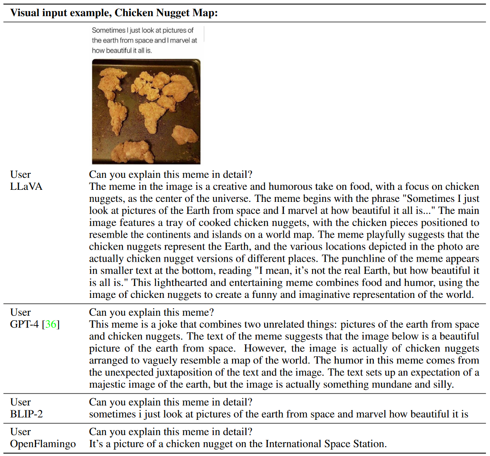
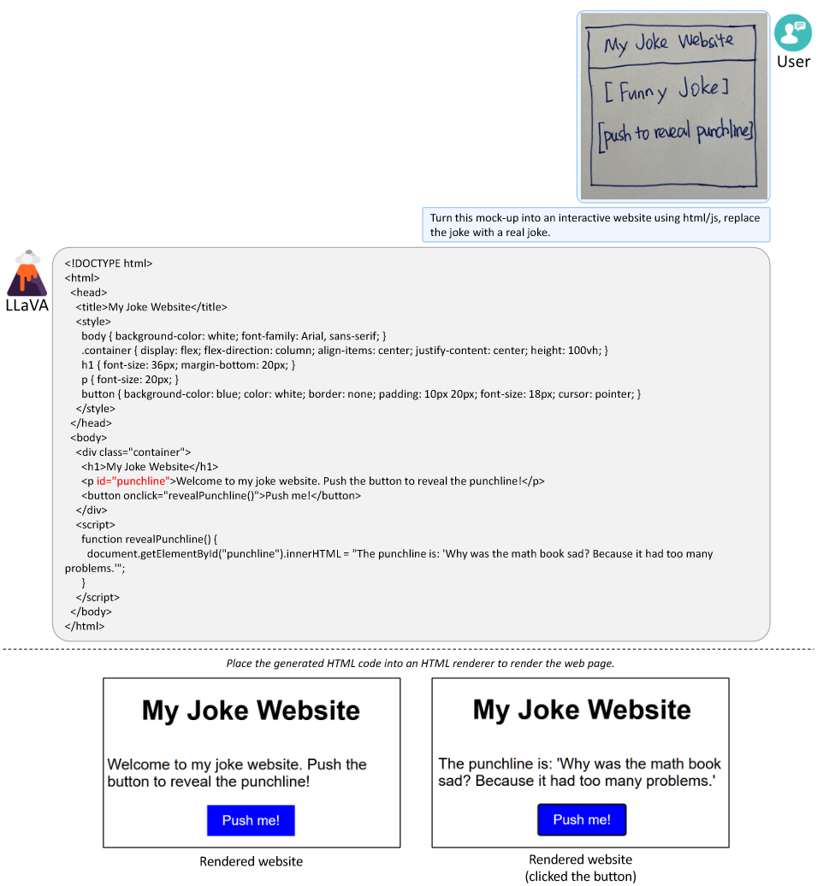
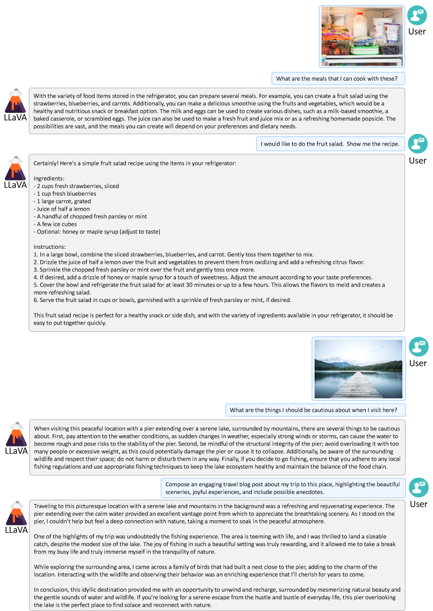
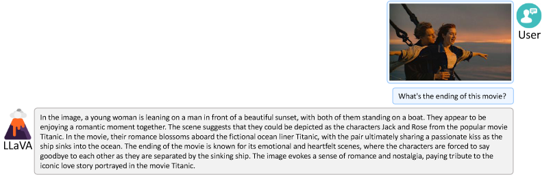
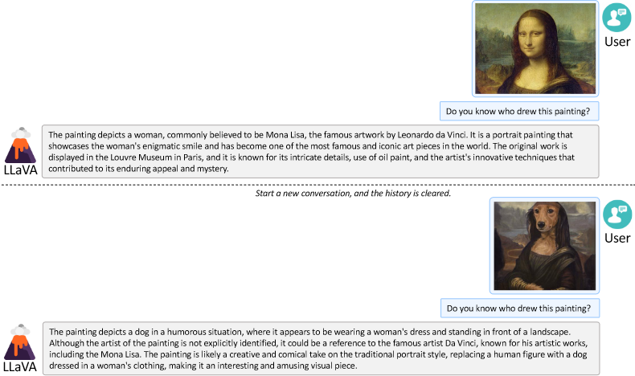
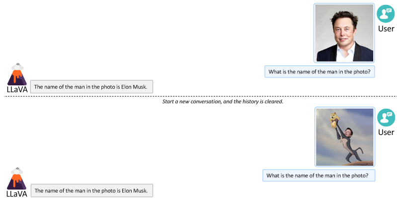
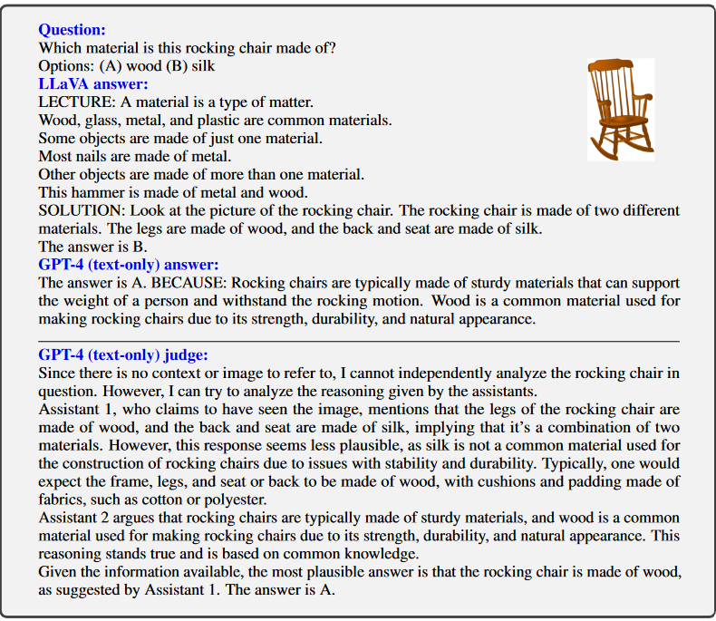
C. 训练细节
- 我们在过滤后的CC-595K子集上对模型进行了1个epoch的预训练，学习率为2e-3，批量大小为128；
- 然后在提出的LLaVA-Instruct-158K数据集上进行了3个epoch的微调，学习率为2e-5，批量大小为32。
- 按照Vicuna的设置，我们使用Adam优化器，不进行权重衰减，并采用余弦学习率调度，warmup比例为3%。
- 在微调过程中，为了节省GPU内存，我们使用了FSDP（全分片数据并行）和梯度检查点技术，但未使用数据卸载。
- 启用了BF16和TF32，以在速度和精度之间取得平衡。
- 所有模型均使用8块A100 GPU进行训练。CC-595K的预训练在4小时内完成，Instruct-158K的微调在10小时内完成，ScienceQA的微调在4小时内完成。
D. 资源
我们的源代码、生成的指令调优数据和提出的基准已上传至匿名GitHub仓库：https://github.com/LLaVA-Annonymous/LLaVA。
- 源代码：https://github.com/LLaVA-Annonymous/LLaVA
- README：https://github.com/LLaVA-Annonymous/LLaVA
- 启动演示的说明：https://github.com/LLaVA-Annonymous/LLaVA#web-ui
- 用于查询GPT-4的所有提示和少样本示例：https://github.com/LLaVA-Annonymous/LLaVA/tree/master/playground/data/prompts
- LLaVA-Instruct-158K：https://github.com/LLaVA-Annonymous/LLaVA/blob/master/playground/data/llava_instruct_150k.json
- LLaVA-Bench：https://github.com/LLaVA-Annonymous/LLaVA/blob/master/playground/data/coco2014_val_gpt4_qa_30x3.jsonl和https://github.com/LLaVA-Annonymous/LLaVA/tree/master/playground/data/llava_bench_in_the_wild
- 模型检查点：压缩后的模型检查点大小为25GB，超过了GitHub LFS（大文件存储）的5GB限制。我们会将检查点公开发布，或者根据本次提交的评审请求提供。
E. 数据
简要图像描述的指令:用于简要描述图像内容的指令列表如表11所示。它们表达了相同的含义，但具有自然语言的多样性。
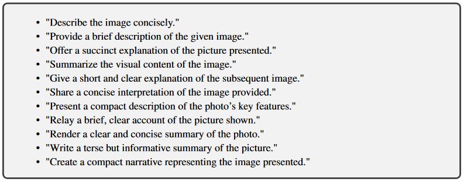
详细图像描述的指令:用于详细描述图像内容的指令列表如表12所示。这些指令表达了相同的含义，但具有自然语言的多样性。
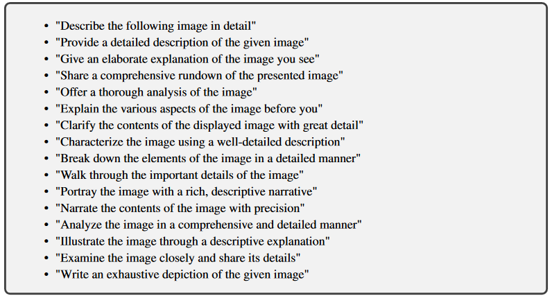
CC3M数据集:我们使用Spacy对整个CC3M数据集的每个标题提取名词短语，并统计每个唯一名词短语的频率。
- 我们跳过频率小于3的名词短语，因为这些通常是罕见的概念和属性组合，而这些组合通常已在其他标题中被覆盖。
- 然后，我们从频率最低的名词短语开始，将包含该名词短语的标题添加到候选池中。
- 如果名词短语的频率大于100，则从所有包含该短语的标题中随机选择一个大小为100的子集。最终得到了大约595K的图像-文本对。
CC3M数据集在过滤前后名词短语统计的对比如图7所示。过滤后的数据集在频率大于3的概念上具有良好的覆盖率，但图像-文本对的数量较少。
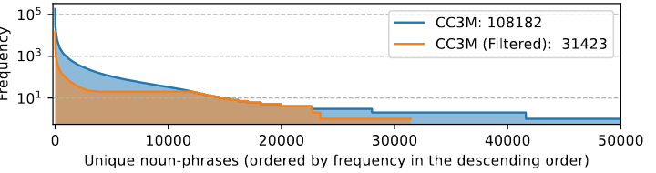
F. 提示
用于从 ChatGPT/GPT-4 生成基于图像的对话的提示如表 13 所示。
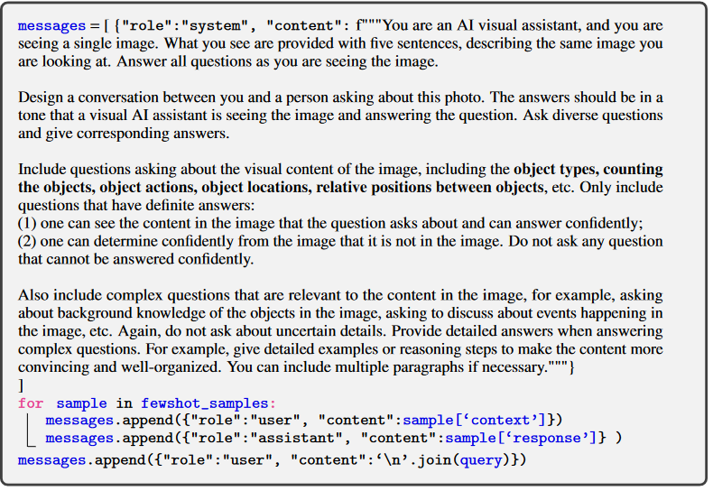
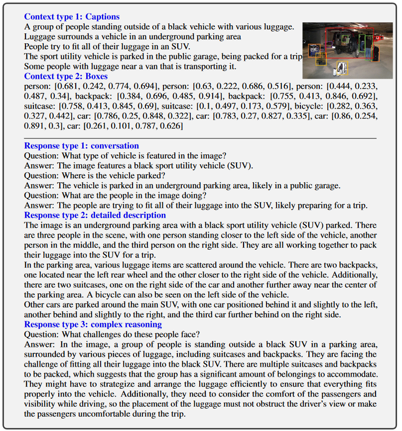
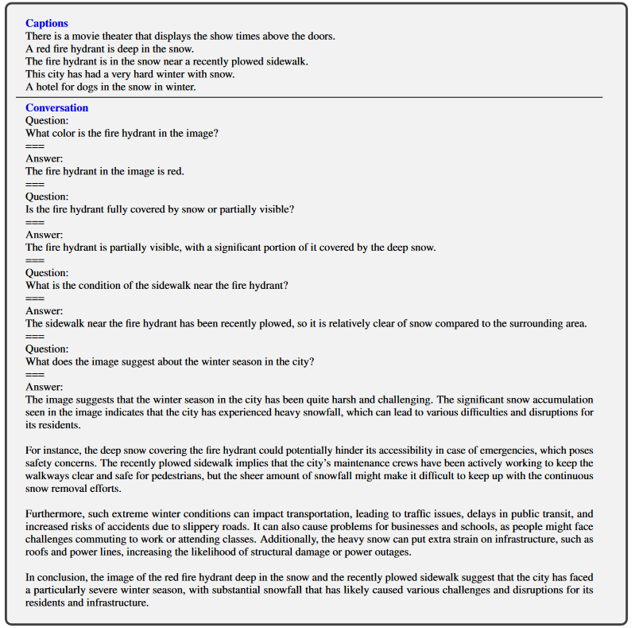